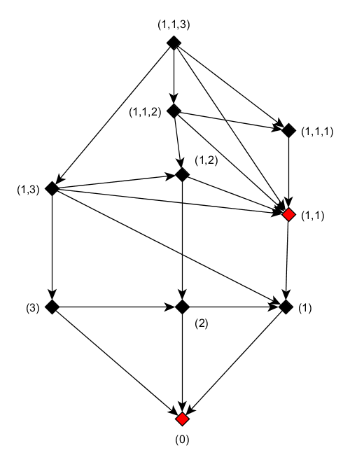
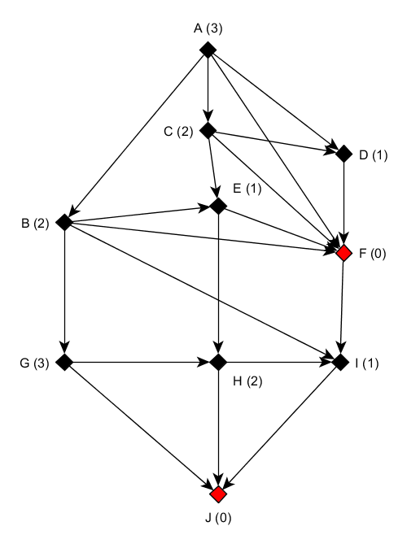

Nim is a mathematical game of strategy in which two players take turns removing objects from distinct heaps. On each turn, a player must remove at least one object, and may remove any number of objects provided they all come from the same heap.
On a table, there is heaps of stones (or matches) from various sizes. Each player takes one or several stones in a single heap. The winner is the one who can empty the table.
Game Graph
The following graph represents a game with three heaps containing 1, 2 and 3 matches respectively.

The graph shows the allowed and possible state after a given state.
For example from (1,1,2), the game rule allows the following states (1,1,1) or (1,2) or (1,1).
The nodes in red compose the graph core. The graph core has the following property:
(1) Every node out of a core has at least one successor, and among them a node of the core
(2) Any node from the core can't have as successor (if exist) a node from the core
A game state or position (or option) can be inside or outside the core. The loosing position(s) is inside the core (from first property).
The first position can be inside or outside the core.
Let's say it is outside, there is a winning strategy for the first player: step in the core (possible, cause of the first property), the second player will step out from the core (from the second property). Then the first player will step in the core once again, etc. If the first position was inside the core, then the second player could adopt the wining strategy of step in, step out the core alternalively.
In the context of a finding a winning strategy, properties above can be rewritten as follow:
(1') From a winning position, there is at least one move to a losing position (in the core)
(2') From a losing position, all moves lead to a winning position (outside the core)
Determining the graph core
The XOR way
Let's try to find a way to compute a positive number for each node determining if the node is in the core or not.
Let's 0, the number assigned to the nodes of the core, so any number different from 0 is outside the core.
Let \(x_1,\) ..., \(x_n\) be the sizes of the heaps before a move, and \(y_1\), ..., \(y_n\) the corresponding sizes after a move.
We have to find an operation ? where, for a given position:
(1') if s = \(x_0\) ? \(x_1 ? ... ? x_n = 0\) then all successor positions of this position verifing t = \(y_0\) ? \(y_1 ? ... ? y_n \ne 0\)
(1') s = if \(x_0\) ? \(x_1 ? ... ? x_n \ne 0\) it exists a least a successor position of this position verifing t = \(y_0\) ? \(y_1 ? ... ? y_n = 0\)
with \(x_i = y_i\) for all \(i \ne k\), and \(x_k > y_k\) (any move from a position to an other can only change one of the \(x_k\)).
A such operation is the XOR (exclusive or) operation sybolized by \(\oplus\).
XOR is a logical bitwise operation, XOR is true only when an odd number of inputs is true.
XOR Thruth Table:
| p | q | \(p \oplus q\) |
|---|---|---|
| 0 | 0 | 0 |
| 0 | 1 | 1 |
| 1 | 0 | 1 |
| 1 | 1 | 0 |
0 = FALSE
1 = TRUE
Proof:
(1') : If you change a single bits in a XOR of bits, you'll change the final result, ie. if \(s = 0\) then \(t \ne 0\)
(2') : From s, there is at least one way to get a sum t equal to 0 while respecting the rule of the game (ie. removing elements from a single heap): Let d be the position of the leftmost one bit in s and k a heap where the dth bit is also one (it has to exist), then from position d (included) flip all the bit of \(x_k\) correponding to the 1 in the sum s. The new sum s will be 0.
Example : The sum is 01011 (the leftmost nonzero bit is at 2th bit). Using the first heap, flipping the 2nd, 4th and 5th bits:
*
1 1 0 0 1 1 0 0 1 0
0 1 1 1 1 0 1 1 1 1
1 0 0 1 1 1 0 0 1 1
0 0 0 1 1 => 0 0 0 1 1
0 1 1 0 1 0 1 1 0 1
--------- ---------
0 1 0 1 1 0 0 0 0 0
We verify \(y_k\) < \(x_k\) : all bits to the left of d are the same in \(x_k\) and \(y_k\), bit d decreases from 1 to 0 (decreasing the value by 2d), and any change in the remaining bits will amount to at most \(2^d-1\).
By removing \(x_k\) - \(y_k\) objects from heap k, we get a let a loosing position for the other player.
From our previous graph, applying XOR sum on heap sizes, we get:

By computing these numbers to the graph, we define a Grundy function. The Grundy numbers are also called nimbers, as value of Nim heap.
For any finite combinatorial game, there is only one way to decompose the (finite) set of positions into nimbers.
The hard way
An other way to find the core:
A number can be assigned to each node so it follows the following property: The number of each node is the smallest number not in the successor numbers list.
For example A with number 3 has for successors B, C, D, F, then the successor numbers list is (0, 1, 2).
This is an illustration of the Sprague-Grundy theorem which states that every impartial game is equivalent to a nim heap of a certain size. Nimber addition (also known as nim-addition) can be used to calculate the size of a single heap equivalent to a collection of heaps. It is defined recursively by:
where for a set S of ordinals, mex(S) is defined to be the "minimum excluded ordinal", i.e. mex(S) is the smallest ordinal which is not an element of S.
From our previous properties:
(1) Every node out of a core has at least one successor, and among them a node of the core
(2) Any node from the core can't have as successor (if exist) a node from the core
the relation with the Grundy number 0 and the core is a follow:
A number outside the core has a Grundy Number > 0, then 0 is in its successor number list (in respect of the first(1)).
A node with number 0 has as successors only successors with numbers not equal to 0, and then outside the core (in respect of (2)).
For any finite combinatorial game, there is only one way to decompose the (finite) set of positions into two classes which satisfy (1) and (2).
Note :
Example of a digital sum \(7 \oplus 11\):
\(7 = 4 + 2 + 1 = 1.2^{2} + 1.2^{1} + 1.2^{0} = 111\)
\(11 = 8 + 2 + 1 = 1.2^{3} + 0.2^{2} + 1.2^{1} + 1.2^{0} = 1011\)
Then we sum, the base 2 numbers, with 1 + 1 = 0
1 1 1
+ 1 0 1 1
--------
1 1 0 0
\(1100= 1.2^{3} + 1.2^{2} + 0.2^{1} + 0.2^{0} = 12\)
\(7 \oplus 11 = 12\)